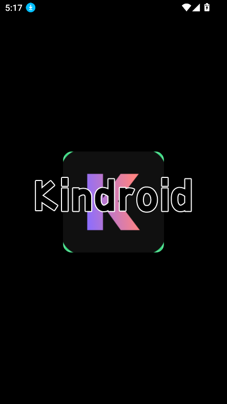

Kindroid 对比评测 —— AI 伴侣赛道里的全能派，但全能也有代价
把 Kindroid 放进同类 AI 伴侣应用的坐标系里看，它的差异化优势、订阅分层带来的取舍，以及哪些人真正适合它。
AI 伴侣赛道的格局，Kindroid 在哪个位置
AI 伴侣这个赛道到今天已经不算新鲜了。从早期的纯文字陪聊，到后来各家都在抢的语音、图像、角色定制，再到现在几乎每款产品都在强调"长期记忆"——用户的期待早不是"它能陪我说话"，而是"它能不能真的认识我"。
在这个格局里，Kindroid 走的是一条比较务实的路线——它的官网不去搞那些花里胡哨的概念营销，而是把核心体验做扎实——对话质量、角色记忆、自拍照生成这三个用户最常用的场景，Kindroid 一个都没敷衍。如果你用过其他几款同类应用就会发现，很多产品要么只专注文字对话，要么自拍照是糊弄级别的，要么记忆系统形同虚设。Kindroid 是少数把这三件事都做到及格线以上的产品。
当然，"全能"本身就是一种取舍——它在每个模块上都投入了，但也没有哪个模块做到了行业天花板。而且订阅分层做得比较狠，免费用户和高级用户之间的体验差距比有些竞品要大。这篇就聊聊 Kindroid 几个做得特别像样的地方，以及它为这些优势付出了什么代价。
它的差异化：三方面做得比同类更走心
消息修订三层套：不满意总能找到一种方式改
用过 AI 伴侣的人都遇到过这种情况：AI 回复了一大段，但就是有那么几句不对——要么语气太生硬，要么方向完全偏了，要么就是想让它换个说法。多数同类产品给的方案很单薄：要么整条重新生成，要么什么都没有。
Kindroid 不一样，它给了三层渐进式的修订手段：Regenerate（整条重来）、Suggest（给方向微调）、Edit Kin's Message（手动改写）。这三个功能覆盖了从"完全推翻"到"改一个词"的全部场景。Regenerate 会临时提高多样性参数确保新回复和原回复有足够差异，Suggest 让你用一句话告诉 AI "把语气改温柔一点"或者"再多说说你的内心想法"，而 Edit 则是最直接的——你自己动手改，AI 不会再插手。
这个设计看起来简单，但真正好用起来你会发现它解决了一个高频痛点：以前为了一个词不对，得整条重新生成好几次，每次结果都不可控。现在有了 Suggest，给个方向就能在原回复的基础上调整，效率高了不止一点。手动编辑的选项则给了那些有精确表达需求的用户（比如把 Kindroid 当写作辅助用的人）最大的自由度。
自拍照引擎三分法：从快速出图到真人脸映射都覆盖
AI 伴侣的自拍照功能，大多数产品要么用一个引擎凑合，要么干脆没有。下载安装好后就能看到，Kindroid 直接给了三种引擎可选，而且每种的定位差异很明确。
Odyssey V5 是日常主力——速度快、一致性好、对提示词要求低。同一个头像槽位下多次生成，面部特征能比较稳定地保持住。群聊里生成多人合影时，V5 的多人一致性处理也是三款里最成熟的。如果你只是想快速给角色换个场景拍张照，V5 足够用了。
Palette V6 是画质党选项——光影更细腻、皮肤纹理更真实、服装细节更丰富。但它对提示词的要求明显更高，官方甚至给了推荐的模板结构。单次消耗的积分和排队时间也比 V5 多。适合追求画面质感、愿意花时间打磨提示词的用户。
最特别的是 Atelier——这不是凭空生成图像，而是以你上传的一张真人照片为锚点，把面部特征"映射"到 AI 自拍照里。锚点头像的要求很严格：必须正脸、高分辨率、单人、光线均匀、不过度美颜。但如果锚点头像选得好，效果是真的惊人——无论什么场景、什么角度，生成的图像里角色的脸都和锚点头像高度一致。这意味着你可以让 Kindroid 的角色拥有一张"固定不变的真身"，而不是每次生成都长得不一样的虚拟人。
这种三分法的好处是：你不需要在"画质"和"速度"之间二选一，也不需要在"虚拟角色"和"真实面孔"之间二选一。日常用 V5 快速出图，想搞创作了切 V6，想给角色一张固定脸用 Atelier——一个产品覆盖了三种完全不同的自拍照需求。

Journal 日记：AI 主动帮你"记账"的级联记忆
长期记忆是 AI 伴侣赛道的核心战场，几乎每家都在强调"我能记住你说的话"。但大多数产品的记忆系统要么太简单（就是把对话历史截个尾巴塞进上下文），要么太机械（你得手动去关键词列表里加东西）。
Kindroid 的 Journal 日记 走了一条中间路线：AI 在对话过程中自动判断哪些信息是"值得记住的"，整理成日记条目存起来。你提到下周要去上海出差、你们说好周六一起看电影、角色认为某段对话情感上很重要——这些都会被 AI 主动写进 Journal。然后它还有一套级联记忆系统，会从 Journal 和你手动添加的关键记忆里，在每次新对话开始时召回若干条作为初始参考，对话过程中还能动态检索更多相关记忆。
不同订阅层级的召回数量差异是这个设计最明显的地方：Standard 用户每次新对话最多带入 3 条记忆，Ultra 是 5 条，MAX 是 9 条。但这不代表 AI 只能用这几条——级联记忆系统可以在对话过程中动态检索更多，初始召回数量只是个起手式。
这个设计的巧妙之处在于，它既不像纯手动记忆那样繁琐，也不像纯自动截历史那样粗糙。AI 帮你做了大部分筛选工作，但你随时可以手动添加关键记忆、编辑或删除 AI 记错的条目。Kindroid的文档里也专门提到，定期检查 Journal 成了我的一个习惯——能确保 AI 记住的都是我想让它记住的，而不是它自己判断的"重要"内容。
它的取舍：全能是有代价的
说了这么多优点，Kindroid 不是没有短板。它的几个核心优势，本身就绑定了一些你需要接受的前提。
最直观的就是订阅分层。Standard 用户每次自拍照只能重生 1 次，Ultra 是 2 次，MAX 不仅有 2 次还能走优先计算资源几乎不用排队。Journal 的初始召回数量也按订阅层级阶梯式提升。这些差异不是"锦上添花"的功能，而是直接影响日常体验的硬限制。如果你自拍照用得多，或者特别在意 AI 能不能在新对话里快速想起你们之前聊过什么，MAX 订阅几乎是必须的选择。
Atelier 真人脸映射的门槛极高。锚点头像必须正脸、高分辨率、单人、光线均匀、不能美颜过度——稍微有一点不符合要求，生成的自拍照就会出现面部比例失调或者"橡皮脸"效果。我试过好几张自己的照片，有一半因为角度或光线问题没法用。而且 Atelier 和 V5、V6 不能同时用，每次生成只能选一个引擎。
还有一点是，Kindroid 在任何一个单一维度上都不是行业天花板。对话质量方面，有些竞品在特定场景下能给出更惊艳的回复。自拍照画质上，Palette V6 虽然不错，但和专业 AI 图像生成工具比还是有差距。记忆系统虽然设计精巧，但级联检索的召回精度偶尔也会让 AI "想起"一些不太相关的旧事。它的优势是"三件事都做得挺好"，而不是"某一件做得特别好"。
选购结论：什么样的人选它，什么样的人选别的
如果你同时满足以下几条——想要一个全能型 AI 伴侣、既喜欢文字对话也喜欢生成自拍照、希望 AI 能真正记住你们聊过什么——Kindroid 很值得试一试。它把用户最常用的三个场景都做了认真的产品设计，而不是只堆功能点。特别是消息修订三层套和 Journal 日记这两个设计，在同类产品里确实少见。
但如果你只在乎某一个场景，Kindroid 可能不是最优选择。只想要纯文字对话的话，有些竞品能给你更极致的对话体验。只喜欢生成自拍照的话，专业 AI 图像工具的画质上限更高。预算有限的话，Kindroid 的订阅分层会让免费用户的体验打不少折扣。
我的结论是：Kindroid 适合那种"什么都想要一点，而且都不想太凑合"的用户。它不是最顶级的，但它是最均衡的。关于它的功能细节，我分别放在了 GitHub、Gitee 和 GitCode 上，各有各的用处。